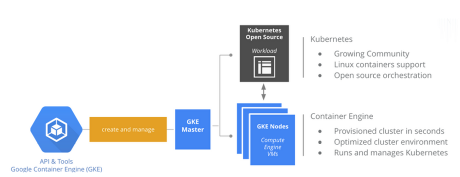

Docker in Production
Are we there yet?
London Django Meetup
March 2017
- Running for 16 years.
- Working exclusively in Django since 2009 (since version 1.0).
- Look after around 30 production sites.
The Promise
- Dockerfiles are so simple!
- Serverless world.
- Dev/CI/Prod parity.
The Reality
@tomm: "all I can see is people trying to solve the problems they caused by using docker"
Demos show you how to build containers but not how to run them in prod.
- Multi container services?
- Logging?
- Persistent data?
- Zero downtime deployment?
AWS ECS
- Fine...
- Fairly weighty terraform config.
- RDS is convenient (and probably some other AWS services are).
- AWS specific / non portable concepts (Task, Service, Agent).
- Some stuff held together with shell scripts.
Google Container Engine

- Managed Kubernetes cluster.
- Free master under 5 nodes.
Google Container Engine
- Container registry.
- Google for auth.
- Google Cloud Storage for CDN.
- 40% cheaper than AWS.
- Just opinionated enough.
- Portability if you outgrow it.
Kubernetes in 1 slide
"Open source platform for automating deployment, scaling and operations of application containers."
Or, "a thing that looks after your containers."
YAML manifests describe cluster objects.
- Service
- Deployment
- Pod
- Ingress
- Secrets
Multi container services?
Manifests
Logging?
StackDriver
Persistent data?
PersistentVolumes
Deployment?
Rolling Updates
Google Cloud SQL Postgres
- Managed Postgres service.
Google Cloud Container Builder
- Run image builds inside GCP.
- Each build step runs inside a container.
- 120 free builds per month.
Come back when someone else has figured it out?
So. Docker in Production - Are we there yet?
Yes!
Particularly if this sounds interesting to you or you want to learn something new or you aren't happy with how you currently do DevOps.
The (possible) future.
- k8s cluster across different providers.
- k8s ecosystem (eg, kube-lego).
- Helm - k8s package manager.
Thanks :)
London Django Meetup
March 2017